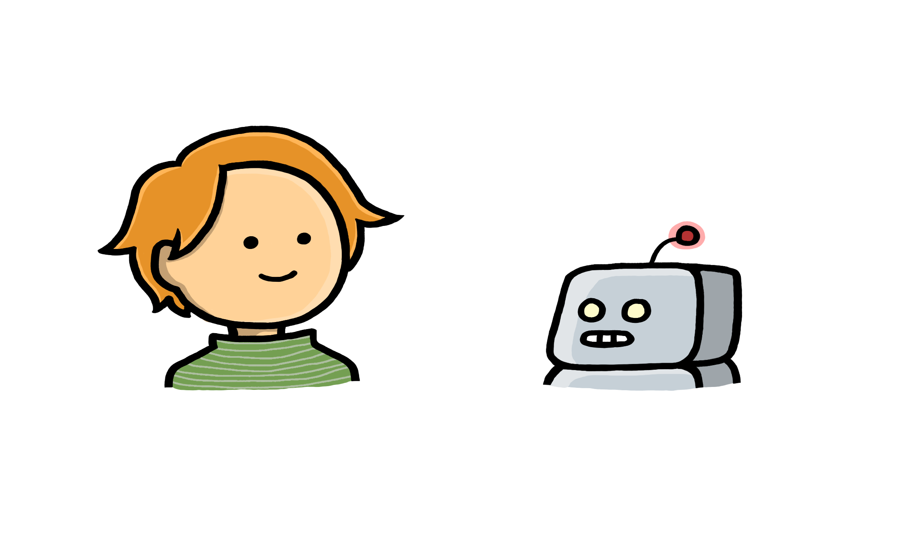

Avslutning
Gratulerer! Du har nå fullført kurset “Kunstig intelligens og administrative oppgaver på UiO”. introduksjonskurset i KI for administrativt ansatte ved UiO.
Nå er det opp til deg, men vi gir deg gjerne noen gode råd på veien:
- Bruk kunnskapen du har fått, det er først med litt erfaring at KI kan bli et nyttig verktøy.
- Vær kritisk og ansvarlig, husk at KI har begrensninger!
- Teknologien utvikler seg raskt. Fortsett å lære og hold deg oppdatert ved å følge med på UiOs nettsider om KI, kurs og workshops ved UiO, og bruk dine fagnettverk og kollegaer til å dele KI erfaringer med!
KI er et kraftig verktøy som kan være til hjelp i arbeidshverdagen, men det er din kompetanse og dømmekraft som gjør KI anvendbart, nyttig og trygt!
{kind=link}

Illustrasjon: Tina Morønning Ruud
Prøv selv!
For å hjelpe deg på veien videre har vi laget to sett med øvingsoppgaver. De finner du i kursets siste del og er oppgaver du kan jobbe med i dagene og ukene fremover for å bli en kyndig bruker av KI.
Lykke til videre på din KI-reise!